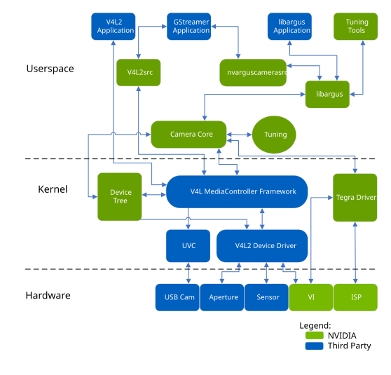

Camera Software Development Solution#
This topic describes the NVIDIA® Jetson™ camera software solution, and explains the NVIDIA-supported and recommended camera software architecture for fast and optimal time to market. It outlines and explains development options for customizing the camera solution for USB, YUV, and Bayer camera support.
Camera Architecture Stack#
The NVIDIA camera software architecture includes NVIDIA components that allow for ease of development and customization:

The camera architecture includes the following NVIDIA components:
libargus: Provides a low-level API based on the camera core stack.nvarguscamerasrc: NVIDIA camera GStreamer plugin that provides options to control ISP properties using the ARGUS API.v4l2src: A standard Linux V4L2 application that uses direct kernel IOCTL calls to access V4L2 functionality.
NVIDIA provides OV5693 Bayer sensor as a sample. NVIDIA tunes this sensor for the NVIDIA® Jetson™ platform. The drive code, based on the media controller framework, is available at:
./kernel/nvidia-oot/drivers/media/i2c/nv_ov5693.c
NVIDIA provides additional sensor support for Jetson Board Support Package (BSP) software releases. Developers must work with NVIDIA certified camera partners for any Bayer sensor and tuning support. The work involved includes:
Sensor driver development
Custom tools for sensor characterization
Image quality tuning
These tools and operating mechanisms are not part of the public Jetson Embedded Platform (JEP) Board Support Package release.
Camera API Matrix#
The following table describes the camera APIs available for each camera configuration.
Camera API |
|
|---|---|
Use Jetson ISP (CSI Interface) |
libargus and GStreamer (GST-nvarguscamerasrc) |
Does not use Jetson ISP[1] (CSI interface) |
V4L2 |
USB (UVC)[2] (USB interface) |
V4L2 |
Here is additional information about the footnotes:
libargus is the preferred path to access the camera.
Drivers are not provided by NVIDIA, so you must write them. You can support peripheral bus devices such as: - Ethernet - Non-UVC USB
Note
The default OV5693 camera does not contain an integrated ISP. Use of the V4L2 API with the reference camera records “raw” Bayer data.
Approaches for Validating and Testing the V4L2 Driver#
Once your driver development is complete, use the provided tools or application to validate and test the V4L2 driver interface.
For general GStreamer and multimedia operations, see Multimedia User Guide, available from the Jetson Download Center.
Applications Using libargus Low-Level APIs#
The NVIDIA Multimedia API provides samples that demonstrate how to use the libargus APIs to preview, capture, and record the sensor stream.
The Multimedia API may be installed with NVIDIA® SDK Manager or as a standalone package.
Multimedia API documentation is in Jetson Linux API Reference, included in the Jetson Linux documentation package, and available for downloading separately from the Jetson Software Documentation page of the Jetson documentation site.
Applications Using GStreamer with the nvarguscamerasrc Plugin#
Use the nvarguscamerasrc GStreamer plugin supported camera features with ARGUS API to:
Enable ISP processing for Bayer sensors
Perform format conversion part of ISP for Bayer Capture
For example, for a Bayer sensor with the format 1080p/30/BGGR:
Save the preview into the file:
$ gst-launch-1.0 nvarguscamerasrc num-buffers=200 ! 'video/x-raw(memory:NVMM), width=1920, height=1080, framerate=30/1, format=NV12' ! omxh264enc ! qtmux ! filesink location=test.mp4 -e
Render the preview to an HDMI® screen:
$ gst-launch-1.0 nvarguscamerasrc ! ‘video/x-raw(memory:NVMM), width=1920, height=1080, format=(string)NV12, framerate=(fraction)30/1' ! nvoverlaysink -e
For more information about the ARGUS API, see the Libargus Camera API page of the Jetson Linux API Reference.
Applications Using GStreamer with V4L2 Source Plugin#
Using the Bayer Sensor, YUV sensor, or USB camera, to output YUV images without ISP processing does not use the NVIDIA camera software stack.
For example, for a USB camera with the format 480p/30/YUY2:
Save the preview into a file (based on a software converter):
$ gst-launch-1.0 v4l2src num-buffers=200 device=/dev/video0 ! 'video/x-raw, format=YUY2, width=640, height=480, framerate=30/1' ! videoconvert ! omxh264enc ! qtmux ! filesink location=test.mp4 -ev
Enter
export DISPLAY=:0if you are operating from a remote console. Then render the preview to a screen:$ gst-launch-1.0 v4l2src device=/dev/video0 ! 'video/x-raw, format=YUY2, width=640, height=480, framerate=30/1' ! xvimagesink -ev
For a YUV sensor with the format 480p/30/UYVY:
Save the preview into a file (based on a hardware-accelerated converter):
$ gst-launch-1.0 -v v4l2src device=/dev/video0 ! 'video/x-raw, format=(string)UYVY, width=(int)640, height=(int)480, framerate=(fraction)30/1' ! nvvidconv ! 'video/x-raw(memory:NVMM), format=(string)NV12' ! omxh264enc ! qtmux ! filesink location=test.mp4 -ev
Render the preview to a screen:
$ export DISPLAY=:0 //if you are operating from remote console $ gst-launch-1.0 v4l2src device=/dev/video0 ! 'video/x-raw, format=(string)UYVY, width=(int)640, height=(int)480, framerate=(fraction)30/1' ! xvimagesink -ev
Applications Using V4L2 IOCTL Directly#
Use V4L2 IOCTL to verify basic functionality during sensor bringup.
For example, to capture from a Bayer sensor with the format 1080p/30/RG10:
$ v4l2-ctl --set-fmt-video=width=1920,height=1080,pixelformat=RG10 --stream-mmap --stream-count=1 -d /dev/video0 --stream-to=ov5693.raw
ISP Configuration#
The Camera Core release package includes model ISP configuration files for reference sensors.
Note
CSI cameras, with integrated ISP and USB camera, can work in ISP bypass mode. Provided ISP support is available for Jetson Developer Kit (OV5693) RAW camera module.
Additional ISP support for other camera modules are supported using third party partners.
If the v4l2-ctl utility captures sensor data successfully but the Argus app, such as argus_camera/nvarguscamerasrc does not work, the problem could be with incorrect data set by the sensor driver’s control function (CID), like ov5693_set_exposure(). This happens because the Argus AE control function continuously calls the CID, unlike v4l2-ctl.
Infinite Timeout Support#
This use case is different from typical camera use cases, in which the camera sensor streams frames continuously and the camera hardware and driver support finite timeouts while waiting for camera frames.
In this use case, a camera sensor is triggered to generate a specified number of frames, after which it stops streaming indefinitely (referred to as the “infinite timeout”). Whenever the camera driver resumes streaming, it must resume capturing frames without timeout issues. The camera driver and hardware must always be ready to capture frames coming from the CSI sensor, even though camera driver is unaware of when streaming will resume.
The infinite timeout is implemented consistently across all internal timeout settings. Once enableCamInfiniteTimeout is set, it overrides all timeouts throughout the driver.
To support this use case, the camera sensor hardware module must support suspending and resuming streaming.
To enable this feature, run the camera server (i.e. the nvargus-daemon service) by setting the enableCamInfiniteTimeout environment variable to 1:
$ sudo service nvargus-daemon stop
$ sudo enableCamInfiniteTimeout=1 nvargus-daemon
Symlinks Changed by Mesa Installation#
Installing Mesa EGL may create a /usr/lib/<ABI_directory>/libEGL.so
symlink, overwriting the symlink to the implementation library that the driver must
use, /usr/lib/<ABI_directory>/tegra-egl/libEGL.so. This
disrupts any client of EGL™, including libraries in the release that use
it for EGLStreams.
In this release, the symlink is replaced when the system is rebooted,
fixing this issue on reboot. Similar workarounds have been applied in
previous releases for other libraries such as libGL and libglx.
Other References#
For details on integrating with other Jetson Multimedia components using V4L2 or GStreamer, see the Jetson Linux API Reference.
For details on Argus, see Libargus Camera API in the Jetson Linux API Reference.
For details on building a custom camera solution, consult a member of the NVIDIA Preferred Partners Community. has details on NVIDIA Preferred Partners Community
For Jetson Partner Supported Cameras, refer the link below Jetson Partner Supported Cameras.